🧪 Casos de Prueba — Módulo Usuarios
Versión: 1.0.1
Módulo: Gestión de Usuarios
Prefijo de código: TC-USR
Total de casos: 8
Fecha: 16 de mayo de 2026
Autor: Lucy Estefany Izquierdo Jaramillo
📋 Plantilla de Caso de Prueba
Cada caso de prueba sigue esta estructura estándar:
| Campo | Descripción |
|---|---|
| Identificador | Código único del caso (TC-USR-XXX) |
| Descripción | Qué se está probando |
| Precondiciones | Estado previo requerido del sistema |
| Datos de entrada | Valores utilizados en la prueba |
| Pasos a seguir | Secuencia de acciones a ejecutar |
| Resultado esperado | Comportamiento correcto del sistema |
| Resultado obtenido | Comportamiento real observado |
| Estado | ✅ Pasó / ❌ Falló / ⚠️ Bloqueado |
| Evidencias | Referencias a capturas de pantalla o archivos |
📝 Descripción de la Funcionalidad
El módulo de Usuarios permite al administrador registrar nuevas cuentas en el sistema. El formulario de creación solicita: tipo de documento, número de documento, nombre completo, email, username, contraseña, rol y fecha de creación. Al completar el registro, el sistema almacena el usuario en la tabla usuarios de PostgreSQL con la contraseña hasheada mediante PBKDF2-SHA256, habilitando su acceso al módulo de Login.
Endpoint principal: POST /api/usuarios/crear/
Acceso requerido: Token Bearer con rol Administrador
🖥️ Ambiente de Pruebas
| Componente | Detalle |
|---|---|
| Backend | Django 4.x + Django REST Framework |
| Base de datos | PostgreSQL 18+ |
| Frontend | Angular 19 |
| Herramienta API | Postman v12 |
| Herramienta BD | pgAdmin 4 |
| Ambiente | Local (desarrollo) |
🧪 Casos de Prueba
TC-USR-001: Creación exitosa de usuario administrador
Descripción Verificar que un administrador puede crear un nuevo usuario con rol Administrador ingresando todos los datos requeridos correctamente.
📌 Información General
| Campo | Detalle |
|---|---|
| Identificador | TC-USR-001 |
| Nombre | Creación exitosa de usuario administrador |
| Tipo de prueba | Funcional |
| Prioridad | Alta |
| Módulo | Gestión de Usuarios |
| Estado | ✅ Pasó |
Precondiciones El tester está autenticado como administrador con un token Bearer válido. El servidor Django y la base de datos PostgreSQL están en línea.
Datos de entrada
{
"tipo_documento": 1,
"numero_documento": "1234567890",
"nombre_completo": "Carlos Pérez",
"email": "carlos1p@gmail.com",
"username": "carlos",
"password": "carlos123",
"rol": 1,
"fecha_creacion": "2026-05-16",
"estado": "activo"
}
Pasos a seguir 1. Iniciar sesión como administrador. 2. Navegar a Configuración > Usuarios. 3. Clic en "Nuevo Usuario". 4. Completar el formulario con los datos indicados. 5. Clic en "Guardar". 6. En pgAdmin verificar:
SELECT id, username, email, rol_id, estado
FROM usuarios
WHERE username = 'carlos';
Resultado esperado
- HTTP 201 Created con mensaje "Usuario creado exitosamente".
- El usuario aparece en el listado del sistema.
- El registro existe en la tabla usuarios con los datos correctos.
Resultado obtenido
El sistema mostró el mensaje de éxito y el usuario quedó registrado en la tabla usuarios de PostgreSQL con los datos correctos.
Evidencias
| Tipo | Evidencia |
|---|---|
| Frontend | 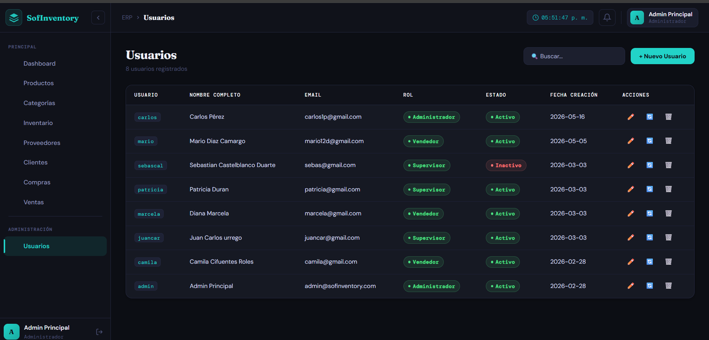 |
| Postman | 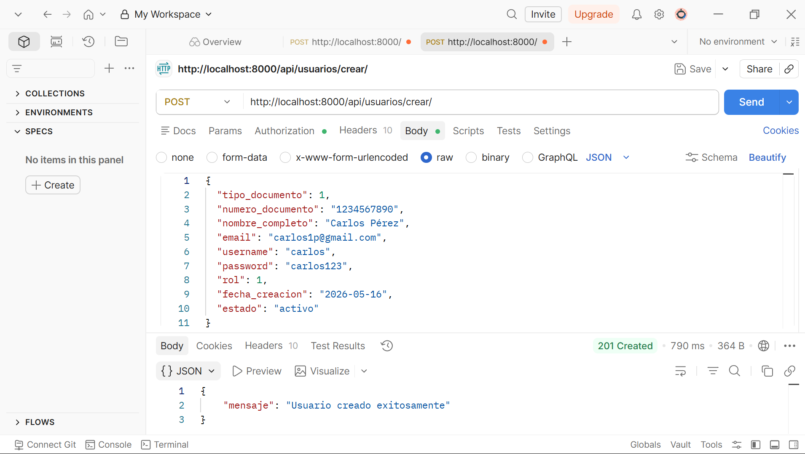 |
| Database | 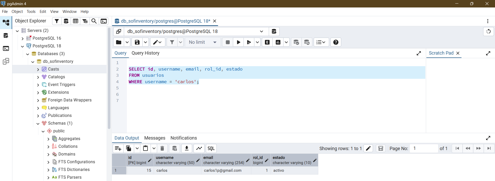 |
{kind=link}
{kind=link}
{kind=link}
📌 Clic en cualquier imagen para ver a pantalla completa
Resultado final: ✅ Exitoso
Observación: El usuario fue creado correctamente y el registro persiste en PostgreSQL con todos los campos esperados.
TC-USR-002: Creación exitosa de usuario supervisor
Descripción Verificar que se puede crear un usuario con rol Supervisor y que sus permisos quedan correctamente restringidos en el sistema.
📌 Información General
| Campo | Detalle |
|---|---|
| Identificador | TC-USR-002 |
| Nombre | Creación exitosa de usuario supervisor |
| Tipo de prueba | Funcional / Control de acceso |
| Prioridad | Alta |
| Módulo | Gestión de Usuarios |
| Estado | ✅ Pasó |
Precondiciones El tester está autenticado como administrador con un token Bearer válido.
Datos de entrada
{
"tipo_documento": 1,
"numero_documento": "9876543210",
"nombre_completo": "Laura Gómez",
"email": "laura1g@gmail.com",
"username": "lauraG",
"password": "laura123",
"rol": 2,
"fecha_creacion": "2026-05-14",
"estado": "activo"
}
Pasos a seguir
1. Iniciar sesión como administrador.
2. Navegar a Configuración > Usuarios > Nuevo Usuario.
3. Completar los datos con rol "Supervisor".
4. Guardar.
5. Cerrar sesión e iniciar sesión con lauraG / laura123.
6. Verificar que el módulo de administración de usuarios no es accesible.
7. En pgAdmin verificar:
SELECT u.username, r.nombre AS rol, u.estado
FROM usuarios u
INNER JOIN roles r ON u.rol_id = r.id
WHERE u.username = 'lauraG';
Resultado esperado
- HTTP 201. Usuario creado con rol Supervisor.
- Al iniciar sesión, la respuesta de /api/auth/me/ refleja "rol": "Supervisor".
- El menú de administración no es visible.
Resultado obtenido
El usuario fue creado exitosamente. Al autenticarse, el menú de administración no estaba visible y el campo rol confirmó el rol Supervisor.
Evidencias
| Tipo | Evidencia |
|---|---|
| Frontend | 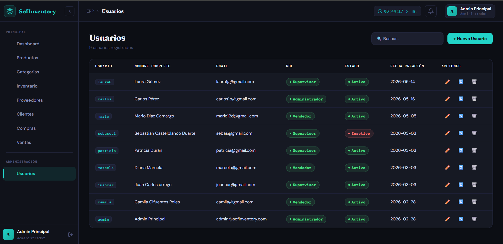 |
| Database | 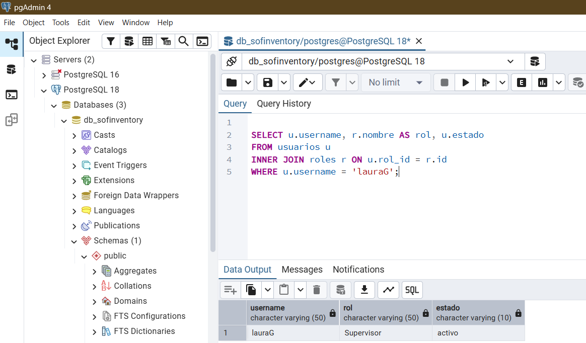 |
{kind=link}
{kind=link}
📌 Clic en cualquier imagen para ver a pantalla completa
Resultado final: ✅ Exitoso
Observación: El rol Supervisor fue asignado correctamente y las restricciones de acceso funcionan como se espera.
TC-USR-003: Rechazo por username duplicado
Descripción
Verificar que el sistema no permite registrar dos usuarios con el mismo username, ya que el campo tiene restricción UNIQUE en la tabla usuarios de PostgreSQL.
📌 Información General
| Campo | Detalle |
|---|---|
| Identificador | TC-USR-003 |
| Nombre | Rechazo por username duplicado |
| Tipo de prueba | Validación / Integridad de datos |
| Prioridad | Alta |
| Módulo | Gestión de Usuarios |
| Estado | ✅ Pasó |
Precondiciones
Existe un usuario con username = 'carlos' (creado en TC-USR-001).
Datos de entrada
{
"username": "carlos",
"email": "CarlosG@gmail.com"
}
Pasos a seguir
1. Abrir formulario de Nuevo Usuario.
2. Ingresar el mismo username carlos ya registrado.
3. Clic en "Guardar".
4. Verificar la respuesta en Postman y el frontend.
Resultado esperado
- HTTP 400 Bad Request con mensaje indicando que el username ya está en uso.
- No se crea el registro duplicado en la tabla usuarios.
Resultado obtenido
El servidor Django respondió con HTTP 400 y el error {"username": ["Ya existe usuario con este username."]}. El frontend mostró el mensaje de validación.
Evidencias
| Tipo | Evidencia |
|---|---|
| Frontend | 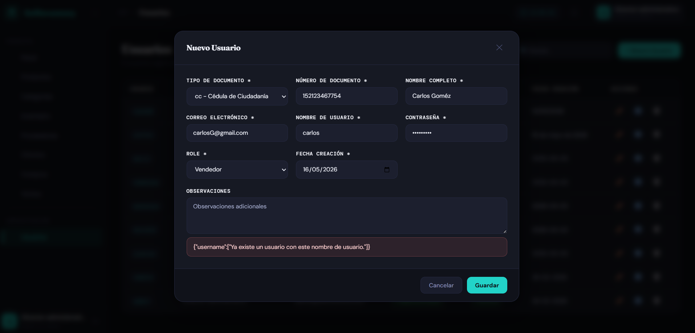 |
| Postman | 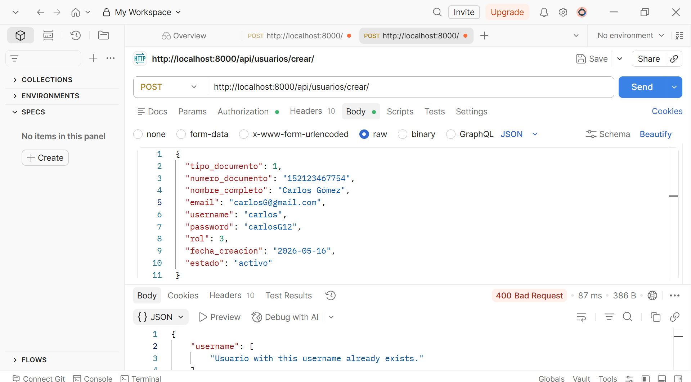 |
{kind=link}
{kind=link}
📌 Clic en cualquier imagen para ver a pantalla completa
Resultado final: ✅ Exitoso
Observación: La restricción UNIQUE del campo username en PostgreSQL y la validación de DRF funcionan correctamente.
TC-USR-004: Rechazo por contraseña débil
Descripción Verificar que el sistema rechaza contraseñas que no cumplen la política de seguridad (mínimo 8 caracteres, al menos una mayúscula, un número y un carácter especial).
📌 Información General
| Campo | Detalle |
|---|---|
| Identificador | TC-USR-004 |
| Nombre | Rechazo por contraseña débil |
| Tipo de prueba | Validación / Seguridad |
| Prioridad | Alta |
| Módulo | Gestión de Usuarios |
| Estado | ❌ Falló |
Precondiciones El tester está autenticado como administrador.
Datos de entrada
{ "username": "test.seguridad", "password": "123" }
Pasos a seguir
1. Abrir formulario de Nuevo Usuario.
2. Ingresar contraseñas débiles (123, 12345, contraseña sin mayúsculas ni caracteres especiales).
3. Intentar guardar desde el formulario.
4. Desde Postman: enviar el mismo body para verificar la validación del backend.
Resultado esperado - Frontend: indicador de contraseña débil visible, formulario bloqueado sin permitir el envío. - Postman: HTTP 400 Bad Request con detalle del error de validación de contraseña. - En ningún caso el usuario debe quedar registrado en la base de datos.
Resultado obtenido
El sistema permitió crear el usuario con contraseñas débiles (123, 12345) tanto desde el formulario Angular como desde Postman. No hubo ninguna validación en el backend — el UsuarioSerializer no aplica políticas de contraseña. El frontend tampoco bloqueó el envío.
Severidad: 🔴 Alta — Usuarios con contraseñas débiles representan un riesgo de seguridad directo en producción. Defecto registrado: BUG-USR-002
Evidencias
| Tipo | Evidencia |
|---|---|
| Frontend | 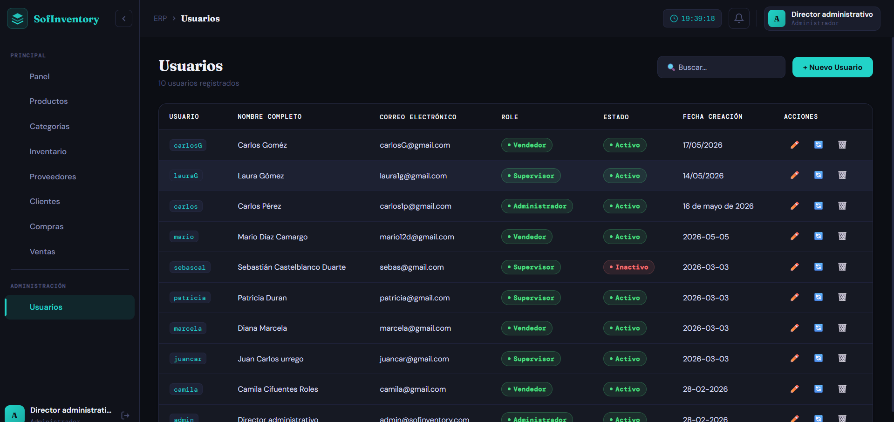 |
| Postman | 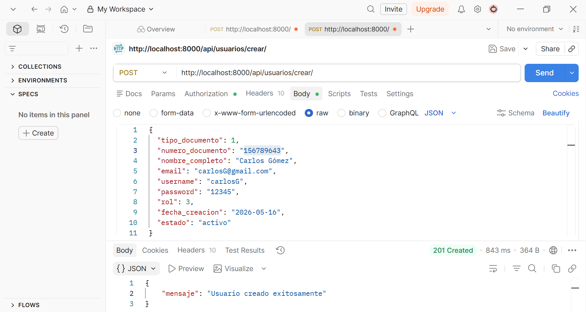 |
{kind=link}
{kind=link}
📌 Clic en cualquier imagen para ver a pantalla completa
Resultado final: ❌ Fallido
Observación: La política de contraseñas no está implementada ni en el frontend ni en el backend. Se debe agregar validación en el UsuarioSerializer con los validadores de contraseña de Django (AUTH_PASSWORD_VALIDATORS) y en el formulario Angular con Validators.pattern. Ver BUG-USR-002 en DEFECTOS.md.
TC-USR-005: Rechazo por número de documento con formato inválido
Descripción
Verificar que el sistema rechaza la creación de un usuario cuando el campo numero_documento contiene caracteres no numéricos.
📌 Información General
| Campo | Detalle |
|---|---|
| Identificador | TC-USR-005 |
| Nombre | Documento con formato inválido |
| Tipo de prueba | Validación / Integridad de datos |
| Prioridad | Alta |
| Módulo | Gestión de Usuarios |
| Estado | ❌ Falló |
Precondiciones El tester está autenticado como administrador.
Datos de entrada
{ "numero_documento": "ABCDE!!!" }
Pasos a seguir
1. Abrir formulario de Nuevo Usuario.
2. Ingresar ABCDE!!! en el campo número de documento.
3. Completar el resto de campos con datos válidos.
4. Clic en "Guardar".
5. Verificar en pgAdmin:
SELECT numero_documento FROM usuarios
ORDER BY id DESC LIMIT 1;
Resultado esperado
- HTTP 400 Bad Request.
- Mensaje: "El número de documento solo debe contener dígitos".
- El registro no se crea en la base de datos.
Resultado obtenido
⚠️ El sistema creó el registro con el valor ABCDE!!! en la columna numero_documento sin mostrar ningún error. No existe validación de formato en el UsuarioSerializer ni en el formulario Angular.
Severidad: 🔴 Alta — Compromete la integridad de los datos en PostgreSQL. Defecto registrado: BUG-USR-001
Evidencias
| Tipo | Evidencia |
|---|---|
| Postman | |
| Database | 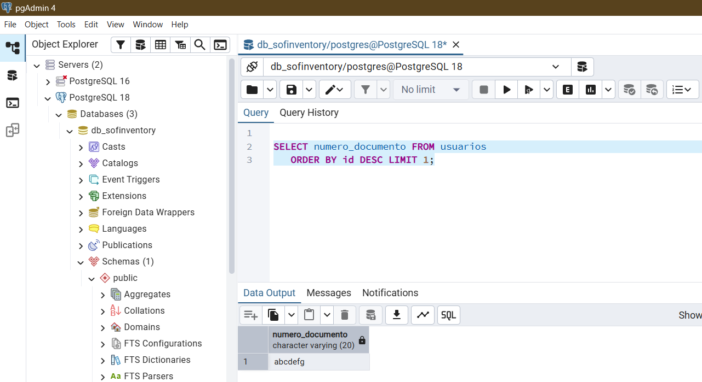 |
{kind=link}
{kind=link}
📌 Clic en cualquier imagen para ver a pantalla completa
Resultado final: ❌ Fallido
Observación: Se debe agregar un RegexValidator en el UsuarioSerializer y validación equivalente en Angular. Ver BUG-USR-001 en DEFECTOS.md.
TC-USR-006: Rechazo por campos obligatorios vacíos
Descripción Verificar que el sistema no permite crear un usuario si se omiten los campos obligatorios del formulario.
📌 Información General
| Campo | Detalle |
|---|---|
| Identificador | TC-USR-006 |
| Nombre | Rechazo por campos obligatorios vacíos |
| Tipo de prueba | Validación / Funcional |
| Prioridad | Media |
| Módulo | Gestión de Usuarios |
| Estado | ✅ Pasó |
Precondiciones El tester está autenticado como administrador.
Datos de entrada
- Frontend: formulario completamente en blanco.
- Postman: body {}
Pasos a seguir
1. Abrir formulario de Nuevo Usuario.
2. No llenar ningún campo.
3. Clic en "Guardar".
4. Desde Postman: POST /api/usuarios/crear/ con body {} y token de administrador.
Resultado esperado
- Frontend: mensajes de validación visibles en todos los campos requeridos (username, password, email, nombre_completo, tipo_documento, numero_documento, rol, fecha_creacion).
- Postman: HTTP 400 con lista de errores por campo faltante (DRF los enumera automáticamente).
Resultado obtenido Los mensajes de validación aparecieron en el frontend para todos los campos requeridos. Postman respondió HTTP 400 con el detalle de cada campo obligatorio faltante.
Evidencias
| Tipo | Evidencia |
|---|---|
| Frontend | 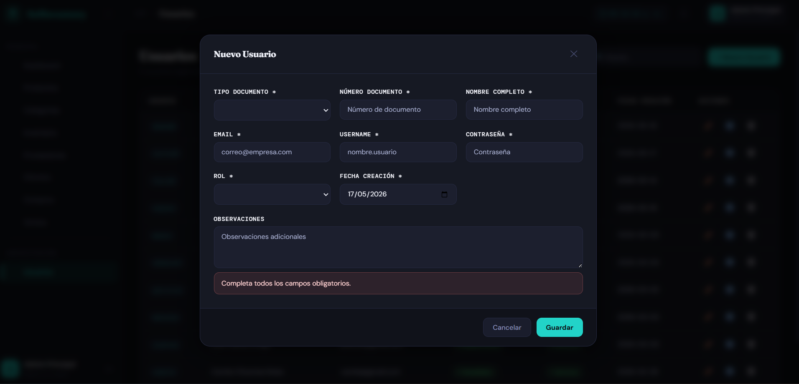 |
| Postman | 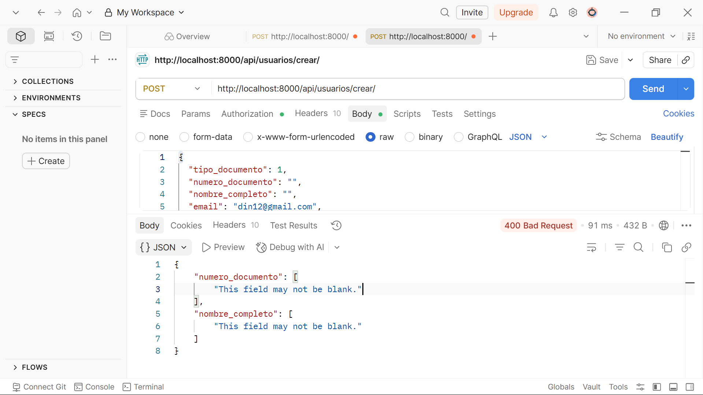 |
{kind=link}
{kind=link}
📌 Clic en cualquier imagen para ver a pantalla completa
Resultado final: ✅ Exitoso
Observación: Las validaciones de campos obligatorios funcionan correctamente tanto en el frontend Angular como en el UsuarioSerializer de DRF.
TC-USR-007: Verificación de contraseña hasheada en base de datos
Descripción Verificar que la contraseña del usuario es almacenada en PostgreSQL utilizando el algoritmo PBKDF2-SHA256 de Django y nunca en texto plano.
📌 Información General
| Campo | Detalle |
|---|---|
| Identificador | TC-USR-007 |
| Nombre | Contraseña hasheada en base de datos |
| Tipo de prueba | Seguridad / Integridad de datos |
| Prioridad | Alta |
| Módulo | Gestión de Usuarios |
| Estado | ✅ Pasó |
Precondiciones
El usuario carlos fue creado en TC-USR-001 con contraseña carlos123.
Acceso a pgAdmin 4 con conexión a la base de datos de SofInventory.
Datos de entrada
SELECT username, password
FROM usuarios
WHERE username = 'carlos';
Pasos a seguir
1. Abrir pgAdmin 4 y conectarse a la base de datos de SofInventory.
2. Abrir el Query Tool.
3. Ejecutar la consulta SQL indicada.
4. Observar el valor de la columna password.
Resultado esperado
- El campo password muestra un hash con el formato Django: pbkdf2_sha256$<iteraciones>$<salt>$<hash_base64>.
- La cadena carlos123 no debe aparecer en ninguna columna.
Resultado obtenido
El campo password contenía el hash completo en formato PBKDF2-SHA256. La contraseña en texto plano no era visible en ninguna columna.
Evidencias
| Tipo | Evidencia |
|---|---|
| Database | 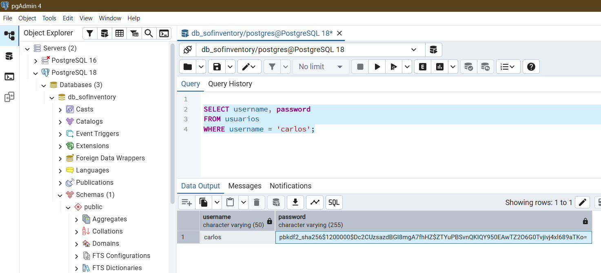 |
{kind=link}
📌 Clic en cualquier imagen para ver a pantalla completa
Resultado final: ✅ Exitoso
Observación: Django aplica automáticamente PBKDF2-SHA256 al campo password. Ningún dato sensible queda expuesto en la base de datos.
TC-USR-008: Usuario creado puede iniciar sesión
Descripción Verificar que un usuario recién creado puede autenticarse exitosamente en el módulo de Login usando su username y contraseña. (Caso de integración: Usuarios → Login)
📌 Información General
| Campo | Detalle |
|---|---|
| Identificador | TC-USR-008 |
| Nombre | Usuario creado puede iniciar sesión |
| Tipo de prueba | Integración |
| Prioridad | Alta |
| Módulo | Usuarios → Login |
| Estado | ✅ Pasó |
Precondiciones
Usuario lauraG fue creado en TC-USR-002 con contraseña laura123 y estado activo.
Datos de entrada
{ "username": "lauraG", "password": "laura123" }
Pasos a seguir
1. Cerrar toda sesión activa.
2. En Postman: POST /api/auth/login/ con el body indicado.
3. Verificar que la respuesta incluye access_token, expires_at y el objeto usuario.
4. En el frontend, navegar a la pantalla de Login e ingresar las credenciales.
5. Verificar redirección al dashboard con el menú de supervisor.
Resultado esperado
- HTTP 200.
- Respuesta contiene access_token, expires_at y "rol": "Supervisor".
- El frontend redirige correctamente al dashboard.
- La sesión queda registrada en sesiones_api con activa = true.
Resultado obtenido
El usuario accedió correctamente. Se generó un token Bearer válido almacenado en la tabla sesiones_api. La redirección al dashboard fue exitosa con el menú de supervisor.
Evidencias
| Tipo | Evidencia |
|---|---|
| Frontend | 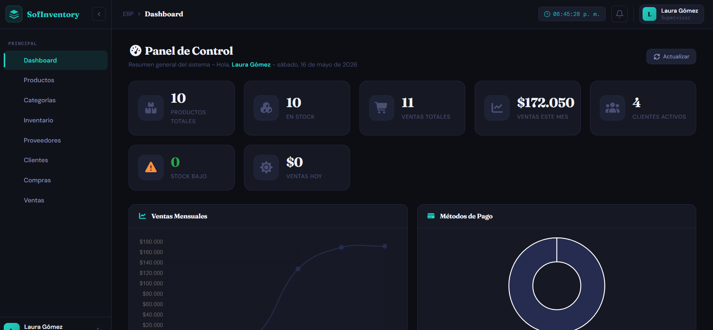 |
| Postman | 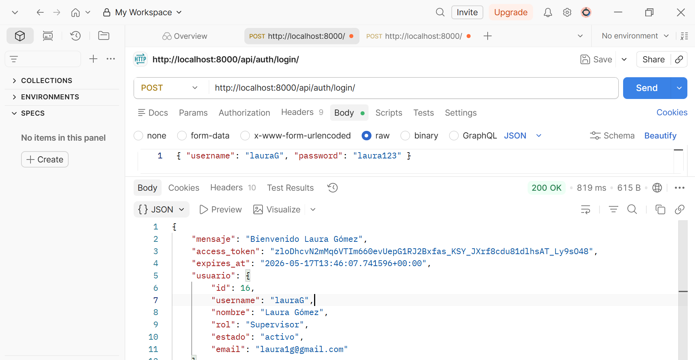 |
{kind=link}
{kind=link}
📌 Clic en cualquier imagen para ver a pantalla completa
Resultado final: ✅ Exitoso
Observación: La integración entre el módulo de Usuarios y el módulo de Login funciona correctamente. El usuario creado puede autenticarse de inmediato.
📊 Resumen de Resultados
| ID | Descripción | Severidad (si falló) | Estado |
|---|---|---|---|
| TC-USR-001 | Crear usuario administrador | — | ✅ Pasó |
| TC-USR-002 | Crear usuario supervisor | — | ✅ Pasó |
| TC-USR-003 | Username duplicado rechazado | — | ✅ Pasó |
| TC-USR-004 | Contraseña débil rechazada | 🔴 Alta | ❌ Falló |
| TC-USR-005 | Número de documento inválido | 🔴 Alta | ❌ Falló |
| TC-USR-006 | Campos obligatorios vacíos rechazados | — | ✅ Pasó |
| TC-USR-007 | Contraseña almacenada como hash PBKDF2 | — | ✅ Pasó |
| TC-USR-008 | Usuario creado puede hacer login | — | ✅ Pasó |
| TOTAL | 6/8 (75.0%) |
🔍 Análisis de Resultados
| Aspecto | Resultado | Evaluación |
|---|---|---|
| Validaciones de formulario (frontend) | Campos requeridos validados; política de contraseña ausente | ❌ Deficiencia |
| Unicidad de username en PostgreSQL | Restricción UNIQUE aplicada correctamente | ✅ Correcto |
| Persistencia de datos en BD | Datos guardados correctamente en tabla usuarios |
✅ Correcto |
| Seguridad de contraseñas (hashing) | PBKDF2-SHA256 aplicado en todos los casos | ✅ Correcto |
| Política de contraseñas (frontend y backend) | Sin validación — contraseñas débiles como 123 aceptadas |
❌ Deficiencia crítica |
| Validación de número de documento | Sin validación de formato — datos inválidos aceptados | ❌ Deficiencia crítica |
| Roles y permisos | Restricciones de acceso por rol funcionan correctamente | ✅ Correcto |
| Integración con Login | Usuario creado accede correctamente con su username | ✅ Correcto |
Hallazgos principales:
- BUG-USR-001: Ausencia de validación de formato en numero_documento — permite ingreso de caracteres inválidos en PostgreSQL, comprometiendo la integridad de los datos y los reportes que dependan de ese campo.
- BUG-USR-002: Ausencia de política de contraseñas en frontend y backend — el sistema acepta contraseñas débiles como 123, exponiendo las cuentas a ataques de fuerza bruta.
💡 Recomendaciones
| # | Prioridad | Categoría | Recomendación |
|---|---|---|---|
| 1 | 🔴 Crítico | Seguridad | Agregar un RegexValidator en el campo numero_documento del UsuarioSerializer para aceptar solo dígitos (^\d+$). Complementar con validación equivalente en el formulario Angular. |
| 2 | 🔴 Crítico | Seguridad | Activar AUTH_PASSWORD_VALIDATORS en settings.py de Django y conectarlos al UsuarioSerializer. Agregar Validators.pattern en Angular para exigir mínimo 8 caracteres, una mayúscula, un número y un carácter especial. |
| 3 | 🟠 Importante | Validación | Agregar restricción de longitud mínima y máxima al campo numero_documento según el tipo de documento (ej. CC: 7-10 dígitos). |
| 4 | 🟡 Mejora | Auditoría | Registrar la creación de usuarios incluyendo el administrador que realizó la acción, IP de origen y fecha/hora. |
| 5 | 🔵 Buenas prácticas | UX | Implementar confirmación de contraseña en el formulario Angular para evitar errores tipográficos al crear el usuario. |
© 2026 SofInventory — Área de Calidad de Software | Versión 1.0.1